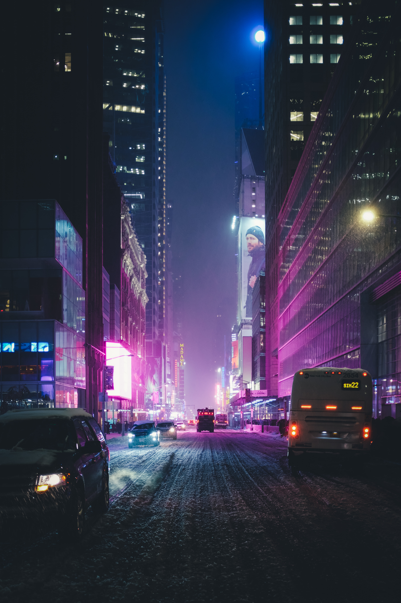

A propos

- Description : New York est une ville composée de 5 arrondissements à l'embouchure du fleuve Hudson et de l'océan Atlantique. En son centre se trouve Manhattan, un arrondissement densément peuplé faisant partie des principaux centres commerciaux, financiers et culturels du monde. Ses sites incontournables comprennent des gratte-ciel comme l'Empire State Building et l'immense Central Park. Le théâtre de Broadway est situé sur Times SquareDescription : New York est une ville composée de 5 arrondissements à l'embouchure du fleuve Hudson et de l'océan Atlantique. En son centre se trouve Manhattan, un arrondissement densément peuplé faisant partie des principaux centres commerciaux, financiers et culturels du monde. Ses sites incontournables comprennent des gratte-ciel comme l'Empire State Building et l'immense Central Park. Le théâtre de Broadway est situé sur Times Square
- Météo : 6°C, vent O à 6 km/h, 68 % d'humidité weather.com
- Quartier : Harlem, Upper East Side, West Village, Flushing, SoHo, PLUS
- Population : 8,468 millions (2021)
- Coordonnées : 40° 42′ 51″ nord, 74° 00′ 21″ ouest